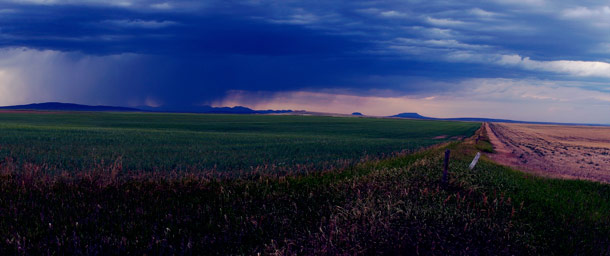

Wilder than the National Parks
Republican bills threaten nearly one million acres of pristine Montana wilderness. The public lands at risk are wilder, quieter, and darker than the National Parks.



Republicans are determined to remove wilderness protections for over 800,000 acres of public lands in Montana, despite broad opposition from constituents and data revealing the threatened lands have fewer traces of light pollution, noise pollution, and human development than many of our most iconic National Parks. Bills by Steve Daines and Greg Gianforte would open 29 wilderness study areas across Montana to motorized recreation, road building, and commercial activity.